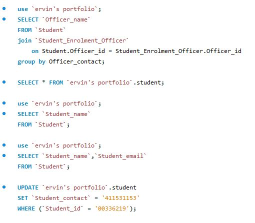

Student Database
SQL database
SQL database
In the first image you can see the initial ERD diagram for the student enrollment application. You can see the relationships between the entities depicted using Crow's feet notation.

The image below shows some SQL queries I made to test if the database is working and if it is able to retrieve the information the application needed. After confirming that the database is able to store and retrieve infromation I proceeded to integrate it into the application.
The last image shows the SQL code used to create the different table entities in the database and their respective elements.